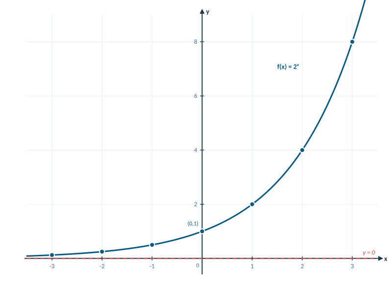

MATH 130 · Section 4.2
Exponential Functions
Growth, decay, compound interest, and modeling
55 minutes · Offline capable
Today’s Learning Roadmap
- 1
recognize and graph exponential functions
- 2
evaluate exponential expressions and use the natural base e
- 3
select and apply simple, periodic, and continuous interest formulas
- 4
interpret exponential growth and decay models
Activate · 0.5 minSource: 2
Predict: recognize and graph exponential functions
Predict firstWhich grows faster for large x: x² or 2ˣ? Explain before calculating.
Commit to a response before discussion.
Activate · 1.0 minSource: Authored
recognize and graph exponential functions
Concept- An exponential function has the variable in the exponent: $f(x)=b^x$, where $b>0$ and $b\ne1$.
- All parent exponential graphs pass through $(0,1)$, have domain $(-\infty,\infty)$, range $(0,\infty)$, and asymptote $y=0$.
Explain · 2.5 minSource: 3, 4
Model the Skill: recognize and graph exponential functions
Annotated diagram- Build and graph a five-point table for $f(x)=2^x$.
- For $x=-2,-1,0,1,2$, the values are $1/4,1/2,1,2,4$.
- Plot the five points and draw a smooth increasing curve through $(0,1)$.
- Domain: $(-\infty,\infty)$; range: $(0,\infty)$; horizontal asymptote: $y=0$.

Graph of the exponential function two to the xModel · 3.0 minSource: 5, 6
You Try: recognize and graph exponential functions
Student practiceGraph $g(x)=3^x$ using five points. Label the intercept, domain, range, and asymptote.
Feedback and solution- Points: $(-2,1/9),(-1,1/3),(0,1),(1,3),(2,9)$.
- Intercept: $(0,1)$; domain: $(-\infty,\infty)$; range: $(0,\infty)$; asymptote: $y=0$.
Practice · 3.0 minSource: 7, 8
Check and Diagnose: recognize and graph exponential functions
Error analysis- Do not confuse $x^2$ with $2^x$.
- A larger growth base is steeper to the right; a base between 0 and 1 produces decay.
Self-checkWhat evidence confirms the setup, sign, unit, or magnitude?
Feedback · 2.0 minSource: 9, 10
Pacing checkpointMake It Stick: recognize and graph exponential functions
Explain how the base determines growth or decay and name the four invariant graph features.
Exit responseAnswer in complete mathematical sentences and identify one remaining question.
Synthesize · 0.5 minSource: 11
Predict: evaluate exponential expressions and use the natural base e
Predict firstWhat value should $e^0$ have, and why must that be true?
Commit to a response before discussion.
Activate · 1.0 minSource: Authored
Model the Skill: evaluate exponential expressions and use the natural base e
1$3.5^{1.6}\approx7.422$; a base above 1 with a positive exponent should exceed 3.5.
2$(3/4)^{-0.95}\approx1.314$; a negative exponent takes a reciprocal, so the result exceeds 1.
3Both results are positive, as required for positive bases.
Model · 3.0 minSource: 13
You Try: evaluate exponential expressions and use the natural base e
Student practiceEvaluate $e^{-0.15}$ and $175e^{0.5}$ to the nearest thousandth.
Feedback and solution- $e^{-0.15}\approx0.861$.
- $175e^{0.5}\approx288.526$.
Practice · 3.0 minSource: 14
Check and Diagnose: evaluate exponential expressions and use the natural base e
Error analysis- A negative exponent does not make the result negative.
- Estimate first: $e^{0.5}$ lies between 1 and e.
Self-checkWhat evidence confirms the setup, sign, unit, or magnitude?
Feedback · 2.0 minSource: 15
Pacing checkpointMake It Stick: evaluate exponential expressions and use the natural base e
Describe one calculator check that catches an exponent-entry error.
Exit responseAnswer in complete mathematical sentences and identify one remaining question.
Synthesize · 0.5 minSource: 16
Predict: select and apply simple, periodic, and continuous interest formulas
Predict firstWhich wording tells you whether an interest problem needs n or e?
Commit to a response before discussion.
Activate · 1.0 minSource: Authored
select and apply simple, periodic, and continuous interest formulas
2Periodic compound: $A=P(1+r/n)^{nt}$.
3Continuous compound: $A=Pe^{rt}$.
Explain · 2.5 minSource: 17, 18
Model the Skill: select and apply simple, periodic, and continuous interest formulas
1Annual compounding gives $n=1$ in $A=P(1+r/n)^{nt}$.
2$A=44000(1.0325)^{13}\approx66684.28$.
3The balance exceeds the principal and retains currency units.
Model · 3.0 minSource: 19, 20
You Try: select and apply simple, periodic, and continuous interest formulas
Student practice$2000 is invested at 3.1% compounded semiannually for 3 years. Find A.
Feedback and solution- Use $P=2000$, $r=0.031$, $n=2$, $t=3$.
- $A\approx2193.36$.
Practice · 3.0 minSource: 21, 22
Check and Diagnose: select and apply simple, periodic, and continuous interest formulas
- Convert percentages to decimals.
- n is compounds per year, not the number of years.
Continuous compounding has no n.
Feedback · 2.0 minSource: 23, 24
Pacing checkpointMake It Stick: select and apply simple, periodic, and continuous interest formulas
Give a decision rule that selects the correct interest formula from the wording.
Exit responseAnswer in complete mathematical sentences and identify one remaining question.
Synthesize · 0.5 minSource: 25, 26
Predict: interpret exponential growth and decay models
Predict firstIn $A(t)=3200(1/2)^{t/14}$, what does each number mean?
Commit to a response before discussion.
Activate · 1.0 minSource: Authored
interpret exponential growth and decay models
Concept- A coefficient gives the initial amount.
- A factor above 1 models growth; a factor between 0 and 1 models decay.
- The exponent $t/14$ counts the number of half-lives.
Explain · 2.5 minSource: 27
Model the Skill: interpret exponential growth and decay models
For $A(t)=3200(1/2)^{t/14}$, evaluate the model at $t=0$ and $t=40$ hours.
- $A(0)=3200(1/2)^0=3200$ units.
- $A(40)=3200(1/2)^{40/14}\approx441.64$ units.
- The decrease is reasonable because 40 hours is almost three half-lives.
Model · 3.0 minSource: 28
You Try: interpret exponential growth and decay models
Student practiceA culture begins with 500 cells and doubles every 3 hours. Write a model and estimate the population after 10 hours.
Feedback and solution- $B(t)=500\cdot2^{t/3}$.
- $B(10)\approx5039.7$ cells.
Practice · 3.0 minSource: Authored
Check and Diagnose: interpret exponential growth and decay models
Error analysis- The initial amount is found by setting time equal to zero.
- Keep units attached to time and rate quantities.
Self-checkWhat evidence confirms the setup, sign, unit, or magnitude?
Feedback · 2.0 minSource: 29
Pacing checkpointMake It Stick: interpret exponential growth and decay models
Explain how to read initial value, growth or decay factor, and time scale from an exponential model.
Exit responseAnswer in complete mathematical sentences and identify one remaining question.
Synthesize · 0.5 minSource: Authored
Session Summary and Exit Ticket
- State the most important idea from today without looking at your notes.
- Complete one representative setup and identify the step most likely to cause an error.
- Write one question that should be answered before the next assessment.
Exit responseAnswer in complete mathematical sentences and identify one remaining question.
Feedback and solutionUse the objective roadmap to identify any skill that still needs deliberate practice.
Synthesize · 1.5 minSource: 30, 31